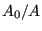
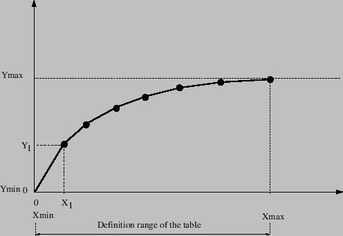

Next: Reservoir
Up: Fluid Section Types: Open
Previous: Discontinuous Slope
Contents
The discontinuous opening is the downstream element of the boundary element pair defining
a change in channel slope. The following constants have to be specified on the
line beneath the *FLUID SECTION,TYPE=CHANNEL DISCONTINUOUS OPENING card:
- the width

-
 (Figure 125; if
(Figure 125; if  the slope is calculated from the
coordinates of the end nodes belonging to the element)
the slope is calculated from the
coordinates of the end nodes belonging to the element)
- the length  (Figure 125; if
 the length is calculated from the
coordinates of the end nodes belonging to the element)
the length is calculated from the
coordinates of the end nodes belonging to the element)
- the trapezoid angle

- the grain diameter  for the White-Colebrook law or the Manning
constant
 for the Manning law (in the latter case the user has to specify
the parameter MANNING on the *FLUID SECTION card)
for the Manning law (in the latter case the user has to specify
the parameter MANNING on the *FLUID SECTION card)
- the number of the upstream discontinuous slope element.
The length is typically small compared to the length of the adjacent
channel branches.
Example files: channel6.
guido dhondt
2018-12-15